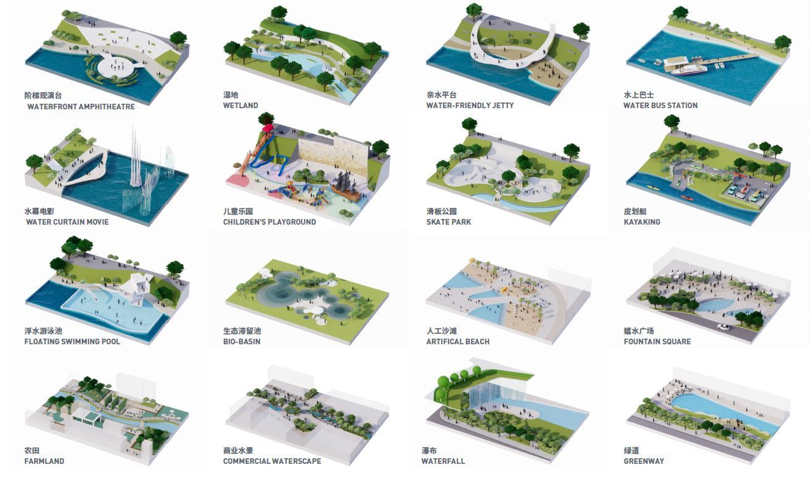
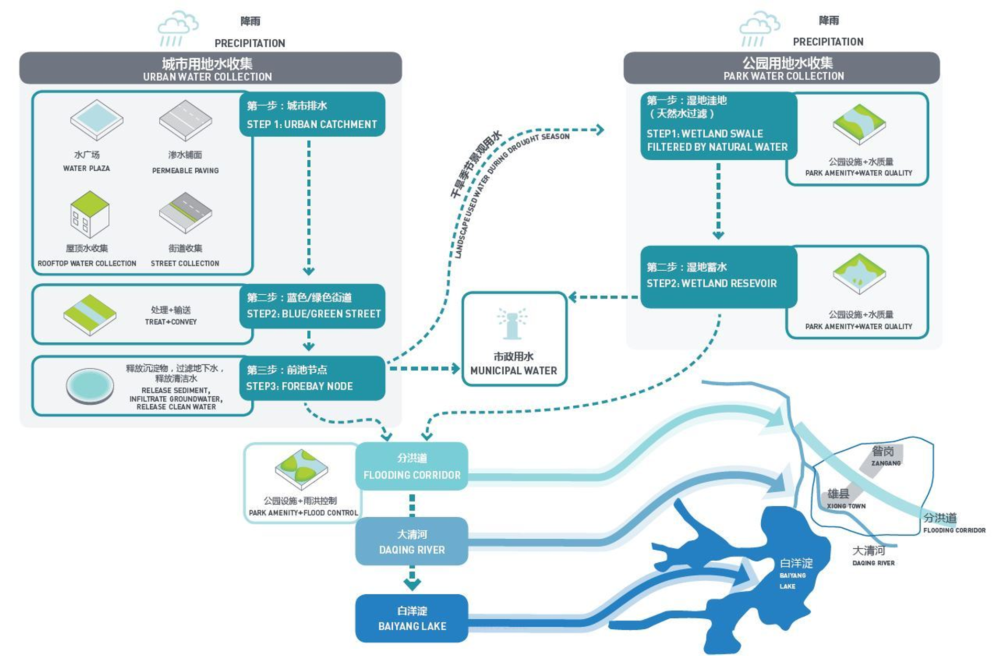

4 Week4 - Policy Applications
4.1 Problem: Context & Background
Beijing recently faced an unprecedented natural event: the heaviest rainfall in 140 years occurred between July 29 and August 1, 2023. This extreme weather event led to widespread flooding, impacting the city’s infrastructure, residents, and environment. Several factors contributed to the severity of the floods, including climate conditions, landform characteristics, and the effects of rapid urbanization.(Beijing Municipal Emergency Committee, 2022)1
4.2 Policy & Case Study
4.2.1 UN Sustainable Development Goals
In response to such climate-related challenges, it is crucial to align efforts with the United Nations’ Sustainable Development Goals (SDGs)2. Key objectives include prioritizing wastewater treatment and sustainable urbanization. By integrating these goals into urban planning and development, cities like Beijing can enhance their resilience to climate disasters. Additionally, following the Sendai Framework for Disaster Risk Reduction provides a comprehensive approach to disaster preparedness and mitigation.
4.2.2 Beijing Urban Resilience Strategy
Beijing’s urban resilience strategy aims to address vulnerabilities exacerbated by urbanization(Yuan,H., 2023)3. Key components include:
Upgrading Emergency Disaster Prevention Technology: Investing in advanced monitoring systems, early warning mechanisms, and real-time data analytics can significantly enhance disaster preparedness and response.
Improving Emergency Rescue Capability: Strengthening emergency services, training first responders, and establishing efficient evacuation protocols are essential for minimizing casualties during extreme events.
Fostering Cross-Sectoral Coordination and Collaboration: Effective disaster management requires collaboration among government agencies, private sectors, NGOs, and local communities. Coordinated efforts can enhance overall resilience and facilitate timely responses.
By implementing these strategies, Beijing can better withstand future climate-related challenges and protect its residents and infrastructure.

4.2.3 Beijing Sponge City Strategy
“Sponge City” refers to an urban design approach that uses green infrastructure to absorb, store, and purify rainwater, thereby reducing flood risks and improving urban environmental quality(Xu, Y. , 2020)4. This design includes elements such as parks, permeable pavements, rain gardens, infiltration and storage wells, urban gardens, and green walls.
 This standard aims to scientifically and rationally compile sponge city planning, ensuring effective roles in water safety, resources, environment, ecology, and culture.
Outlines requirements for compiling sponge city plans within Beijing’s administrative region, covering general urban planning, district planning, detailed planning, and town planning. Also includes assessment of sponge city planning implementation. These features not only facilitate the natural flow and storage of rainwater but also enhance the urban microclimate, increase biodiversity, and provide more recreational spaces for residents.
4.3 Urban Resilience Strategy v.s. “Sponge City”
Relationship Between Sponge City and Urban Resilience:
The “Sponge City” concept is a nature-based approach designed to enhance urban resilience by improving water management and reducing the impact of extreme weather events. In essence, a “Sponge City” mimics natural hydrological processes by absorbing, storing, and purifying rainwater, thereby reducing urban flooding risks and replenishing groundwater. This strategy helps cities to adapt to climate change by making them more capable of withstanding and recovering from environmental stresses, particularly those related to water.
Supporting SDGs:
SDG 11 - Sustainable Cities and Communities: The “Sponge City” strategy directly supports SDG 11(United Nations, 2015)5 by promoting resilient infrastructure and sustainable urban development. It contributes to making cities inclusive, safe, resilient, and sustainable by reducing the vulnerability of urban areas to flooding, enhancing public spaces, and improving the quality of urban life.
SDG 6 - Clean Water and Sanitation: The “Sponge City” approach also aligns with SDG 6(United Nations, 2015)6, which aims to ensure availability and sustainable management of water and sanitation for all. By improving urban water management, the “Sponge City” concept helps in the efficient use of water resources, reducing the risk of water scarcity, and ensuring cleaner water supply by filtering pollutants naturally.
4.3.1 Reflection
In this course, I gained valuable insights from examining a city’s policies related to natural disaster protection. Among the new concepts I encountered, the most memorable one was the idea of a “sponge city.” This term vividly illustrates Beijing’s approach to mitigating flood hazards by implementing innovative measures.
The concept of a sponge city emphasizes the need to absorb and manage excess water during heavy rainfall, thereby reducing the risk of flooding. Beijing’s strategy involves creating permeable surfaces, enhancing green spaces, and improving drainage systems. Witnessing how a city like Beijing tackles flood challenges left a lasting impression on me.
One significant challenge in implementing urban policies is striking a balance between macro-level planning and local adjustments. How can a city retain its existing infrastructure while making targeted changes to enhance resilience? This delicate balance requires thoughtful consideration and cross-disciplinary collaboration.
Overall, this course highlighted the complexities of urban resilience and the importance of forward-thinking policies in safeguarding cities against natural disasters. As I continue my studies, I’ll keep the lessons from this class in mind, especially the innovative approaches like sponge cities that can shape our urban future.
4.4 Reference
United Nations Department of Economic and Social Affairs (UNDESA). (n.d.)Milestones for Inclusive Social Development. Retrieved from [https://social.desa.un.org/sdn/transforming-our-world-the-2030-agenda-for-sustainable-development].↩︎
United Nations Department of Economic and Social Affairs (UNDESA). (n.d.)Milestones for Inclusive Social Development. Retrieved from [https://social.desa.un.org/sdn/transforming-our-world-the-2030-agenda-for-sustainable-development].↩︎
Yuan, H.Proposals for China’s Vision for 2035 (2023) Available at: https://www.mem.gov.cn/xw/ztzl/2020/xxgcwzqh/qwjd/zjjd/202012/t20201208_374880.shtml (Accessed: 10 March 2024).↩︎
Xu, Y. (2020). ‘Sponge Cities: A Sustainable Urban Design Approach’, Chapman Taylor. Available at: [https://www.chapmantaylor.com/insights/what-are-sponge-cities-and-why-are-they-the-future-of-urban-design] (Accessed: 31 August 2024).↩︎
Sustainable Development Goals (SDG) 11.2015. United NationsSDG 11 - Sustainable Cities and Communities↩︎
Sustainable Development Goals (SDG) 6.2015. United NationsSDG 6 - Clean Water and Sanitation↩︎